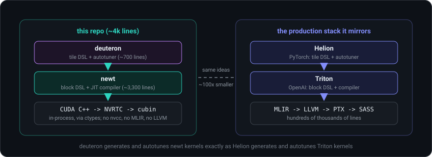
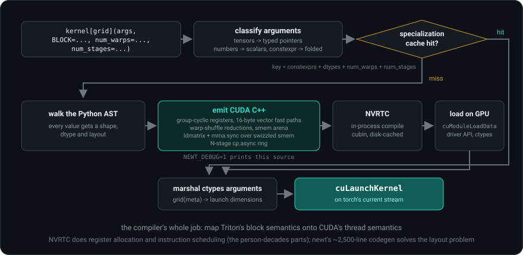
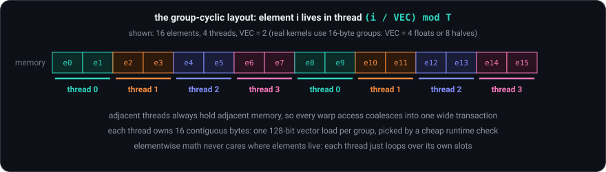
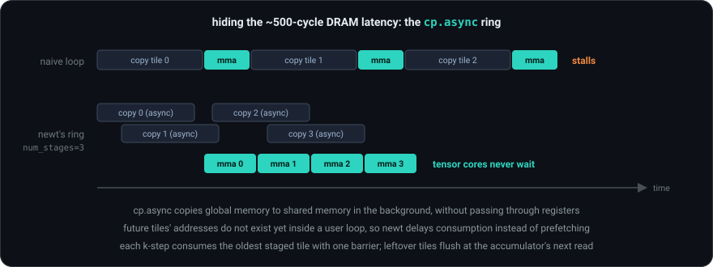
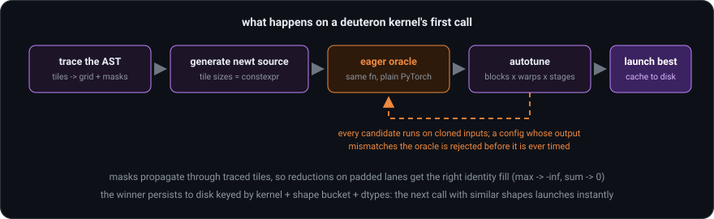

The modern GPU kernel stack,
rebuilt small.
newt is a nano-Triton: Python block kernels JIT-compiled to real GPU machine code through NVRTC and ctypes. deuteron is a nano-Helion: PyTorch-like tile code in, autotuned newt kernels out. ~4,000 readable lines, real performance.

the ideaWhat this is, and why it exists
Triton (an open-source compiler, originally from OpenAI) lets you write GPU kernels as Python functions over blocks of data; its compiler handles thread mapping, memory coalescing, shared memory and tensor cores. Helion (from PyTorch) sits one level higher: PyTorch-like tile code, compiled down to Triton and autotuned. Both are superb tools. Both are also hundreds of thousands of lines, and you will not learn how they work by reading them top to bottom.
The best way to own the ideas inside a big system is to rebuild it small: keep the architecture, shrink the surface, and refuse to give up real performance. That is the founding idea here.
New to GPUs? The primer explains everything this page assumes, starting from zero, with every acronym expanded. If you already know what Triton is, read on.
the compilerInside newt
The shortest path to machine code
A nano cannot carry MLIR and LLVM, and it does not need to: NVIDIA ships a C++ compiler as a library, NVRTC (NVIDIA Runtime Compilation). newt parses your Python function into an AST (abstract syntax tree, the parsed structure of the code), types every value with a shape, dtype and layout, emits a CUDA C++ source string, compiles it in-process with NVRTC into a cubin (compiled GPU binary), and launches it through the raw CUDA driver API using ctypes (Python's built-in foreign-function interface). No files, no external compiler, no wrapper packages.

The layout: where a block actually lives
When a kernel says x = nl.load(ptr + offs) for a block of 1,024 floats, where
are those floats? In registers, spread across the threads of the block by one
fixed rule, the group-cyclic layout: consecutive elements are dealt to threads in 16-byte
groups, round-robin.

Triton proves contiguity with static compiler analysis. newt instead emits a tiny runtime check per group ("are these offsets consecutive, aligned, all unmasked?") and branches to a single 128-bit vector instruction: a few integer compares against a ~500-cycle memory access. That one trick took vector-add from 82% of Triton to parity.
Reductions and broadcasting
nl.sum(x) combines values held by different threads in three stages: each
thread reduces its own registers; each warp reduces its 32 lanes with a butterfly exchange
(__shfl_xor_sync, lanes trading values directly, no memory involved, 5 steps for
32 lanes); one value per warp meets the others in shared memory. Broadcasting between
different-sized blocks stages the smaller operand through a reusable shared-memory scratch
arena with barriers around it; reshapes that do not move data are free.
The matmul story (where the real performance lives)
Matrix multiply is compute-bound: the arithmetic outweighs the memory traffic, so the game flips from "save bandwidth" to "never let the tensor cores stall". Four mechanisms, added one commit at a time:
1. Tiles. Each thread block owns one BM x BN tile of the output and loops over K in BK steps, staging A and B tiles in shared memory. All three sizes are constexpr (compile-time constants), which is what makes them tunable.
2. Raw tensor-core PTX. fp16/bf16 dots compile to ldmatrix (a
warp cooperatively loads 8x8 matrix fragments from shared memory into registers) and
mma.sync.m16n8k16 (one warp multiplies a 16x16 by a 16x8 fragment in one
instruction), written as inline PTX assembly. The accumulator's per-lane register layout
is documented by NVIDIA, so newt can convert it to and from the normal layout whenever the
kernel does elementwise math on it; that conversion is what makes the fused
flash-attention example possible.
3. Swizzled shared memory. Shared memory has 32 banks; simultaneous hits
on one bank serialize (bank conflicts). newt permutes each row's 16-byte chunks by XOR
with the row index: free at runtime (it is just index math, applied identically by writer
and reader) and it makes every ldmatrix access conflict-free, replacing wasteful
padding.
4. The pipeline ring. The most important one:

num_stages
is a real tuning knob, like in Triton, and the autotuner searches over it.A subtle design point: the compiler cannot prefetch future tiles, because their addresses are computed later in the user's loop. newt inverts the problem and delays consumption instead: consume the tile staged S-1 iterations ago, then start this iteration's background copy. Same overlap, no loop rewriting.
Plus a final twist: within one k-step, the fragment loads and the mma math
also form a dependency chain. newt double-buffers the fragments so step k+1's
ldmatrix issues before step k's math, hiding shared-memory latency behind the
tensor cores. That last change took the cold-start matmul from 96 to 110 TFLOP/s
(trillion floating-point operations per second).
The JIT layer
@newt.jit parses the function once. On every call it classifies the arguments
(tensors become typed pointers, Python numbers become scalar parameters,
constexpr annotations become compile-time values), forms a specialization key
(constants + dtypes + num_warps + num_stages), and compiles on a miss.
Binaries are cached in memory and on disk, so the second process to use a kernel pays
nothing. NEWT_DEBUG=1 prints the generated CUDA source, which turned out to be
the single most useful debugging feature in the whole project.
the autotunerInside deuteron
deuteron is ~700 lines doing to newt what Helion does to Triton. You write tiles; it writes kernels. No program ids, no offsets, no masks, no block sizes:
@dt.kernel
def matmul(x, y, out):
for tile_m, tile_n in dt.tile([x.shape[0], y.shape[1]]): # launch grid
acc = dt.zeros([tile_m, tile_n], dtype=dt.float32)
for tile_k in dt.tile(x.shape[1]): # k-loop
acc += x[tile_m, tile_k] @ y[tile_k, tile_n] # tensor cores
out[tile_m, tile_n] = acc
matmul(x, y, out) # traces, generates a newt kernel, autotunes, caches
matmul.ref(x, y, out) # the same function as plain PyTorch (the oracle)
Tracing. The outer dt.tile loop becomes the launch grid; inner
ones become in-kernel loops; tensor indexing becomes pointer arithmetic plus boundary
masks; @ becomes nl.dot fused into the accumulator. The output is a newt
kernel as a source string in which every tile size is a constexpr. Printing
matmul.to_newt_source(...) shows it, and it looks exactly like the hand-written
tutorial matmul: the most satisfying demo in the repository.
The eager oracle. The same function also runs as plain PyTorch (tiles become full-size slices), which gives ground-truth outputs for free. During autotuning, every candidate configuration runs on cloned inputs and its result is compared against the oracle; a config that compiles and runs but computes garbage is rejected before it is ever timed.
The search. Candidates are sampled from the config space (block sizes x
num_warps x num_stages), correctness-filtered, timed with CUDA events,
refined by a local pattern search, and the winner is persisted to disk keyed by kernel,
shape bucket and dtypes. The next call with similar shapes launches instantly.
the numbersResults at a glance
Measured against real Triton (triton-windows) and torch/cuBLAS on the same machine, same kernel source, same tuning sweep: memory-bound kernels (softmax, layernorm, elementwise) tie Triton outright, and fp16 tensor-core matmul holds 76-83% of Triton sustained, reaching 110 TFLOP/s (~92% of Triton's own cold numbers) on cold single runs.